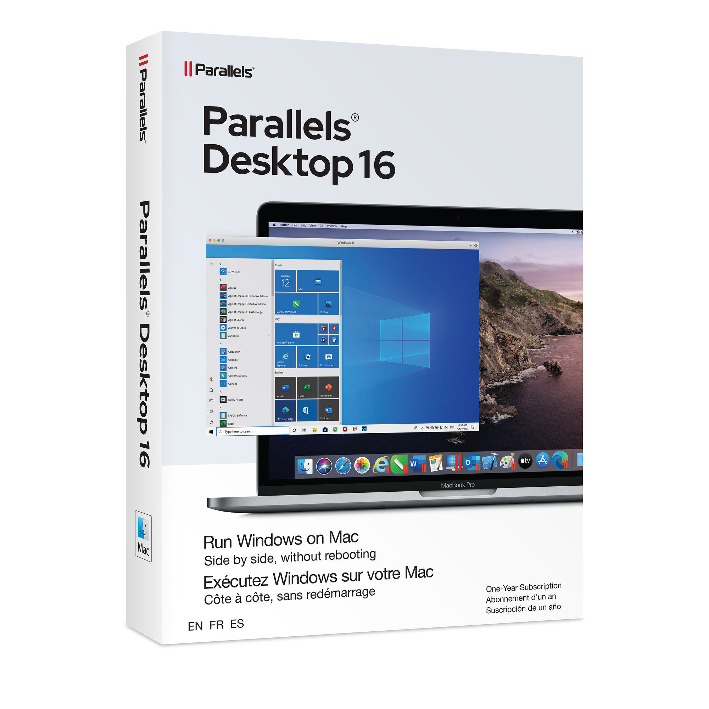

Parallels Desktop
 Parallels Desktop - это приложение для macOS, которое позволяет запускать операционные системы Windows и Linux на компьютере Mac без необходимости перезагрузки системы. Это приложение позволяет пользователям использовать программы, которые не работают на macOS, а также тестировать программное обеспечение на разных платформах.
 Parallels Desktop использует виртуализацию, чтобы создать виртуальную машину, которая эмулирует аппаратное обеспечение компьютера, на котором работает другая операционная система. Пользователь может запускать Windows и Linux в окне на рабочем столе macOS, а также переключаться между ними с помощью горячих клавиш.
Parallels Desktop использует виртуализацию, чтобы создать виртуальную машину, которая эмулирует аппаратное обеспечение компьютера, на котором работает другая операционная система. Пользователь может запускать Windows и Linux в окне на рабочем столе macOS, а также переключаться между ними с помощью горячих клавиш.
Это приложение имеет множество функций, которые облегчают работу с виртуальными машинами, такие как возможность копировать и вставлять текст и файлы между виртуальной машиной и macOS, поддержка многих языков и клавиатур, интеграция с iCloud и многое другое.
Разработка Parallels Desktop был создан компанией Parallels Inc. и доступен для покупки на официальном сайте компании. Это приложение является платным, но предоставляет бесплатную пробную версию на 14 дней для ознакомления с его функциями.
Официальный сайт Parallels Inc.